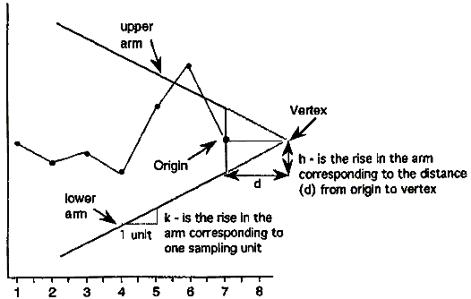

|
6.
Process or Product Monitoring and Control
6.3. Univariate and Multivariate Control Charts 6.3.2. What are Variables Control Charts?
|
|||
| CUSUM is an efficient alternative to Shewhart procedures |
CUSUM charts, while not as intuitive and simple to operate as
Shewhart charts, have been shown to be more efficient in detecting
small shifts in the mean of a process. In particular, analyzing
ARL's for CUSUM control charts
shows that they are better than Shewhart control charts when it is
desired to detect shifts in the mean that are 2 sigma or less.
CUSUM works as follows: Let us collect \(m\) samples, each of size \(n\), and compute the mean of each sample. Then the cumulative sum (CUSUM) control chart is formed by plotting one of the following quantities: |
||
| Definition of cumulative sum |
$$ S_{m} = \sum_{i=1}^{m}(\bar{x}_{i} - \hat{\mu}_{0})
\,\,\,\,\,\,\, \mbox{or} \,\,\,\,\,\,\,
S_{m}' = \frac{1}{\sigma_{\bar{x}}} \sum_{i=1}^{m}(\bar{x}_{i} - \hat{\mu}_{0})
$$
|
||
| V-Mask used to determine if process is out of control |
A visual procedure proposed by Barnard in 1959, known as
the V-Mask, is sometimes used to determine whether a process
is out of control. More often, the tabular form of the
V-Mask is preferred. The tabular form is illustrated later
in this section.
A V-Mask is an overlay shape in the form of a V on its side that is superimposed on the graph of the cumulative sums. The origin point of the V-Mask (see diagram below) is placed on top of the latest cumulative sum point and past points are examined to see if any fall above or below the sides of the V. As long as all the previous points lie between the sides of the V, the process is in control. Otherwise (even if one point lies outside) the process is suspected of being out of control. |
||
| Sample V-Mask demonstrating an out of control process |  |
| Interpretation of the V-Mask on the plot |
In the diagram above, the V-Mask shows an out of control
situation because of the point that lies above the upper arm. By
sliding the V-Mask backwards so that the origin point covers
other cumulative sum data points, we can determine the first point
that signaled an out-of-control situation. This is useful for
diagnosing what might have caused the process to go out of control.
From the diagram it is clear that the behavior of the V-Mask is determined by the distance \(k\) (which is the slope of the lower arm) and the rise distance \(h\). These are the design parameters of the V-Mask. Note that we could also specify \(d\) and the vertex angle (or, as is more common in the literature, \(\theta = 1/2\) of the vertex angle) as the design parameters, and we would end up with the same V-Mask. In practice, designing and manually constructing a V-Mask is a complicated procedure. A CUSUM spreadsheet style procedure shown below is more practical, unless you have statistical software that automates the V-Mask methodology. Before describing the spreadsheet approach, we will look briefly at an example of a V-Mask in graph form. |
| V-Mask Example |
An example will be used to illustrate the construction and application of a
V-Mask. The 20 data points
324.925, 324.675, 324.725, 324.350, 325.350, 325.225, 324.125, 324.525, 325.225, 324.600, 324.625, 325.150, 328.325, 327.250, 327.825, 328.500, 326.675, 327.775, 326.875, 328.350 are each the average of samples of size 4 taken from a process that has an estimated mean of 325. Based on process data, the process standard deviation is 1.27 and therefore the sample means have a standard deviation of \(1.27 / (4^{1/2}) = 0.635\). We can design a V-Mask using \(h\) and \(k\) or we can use an \(\alpha\) and \(\beta\) design approach. For the latter approach we must specify
The values of \(h\) and \(k\) are related to \(\alpha\), \(\beta\), and \(\delta\) based on the following equations (adapted from Montgomery, 2000). $$ \begin{eqnarray} k & = & \frac{\delta \sigma_{x}}{2} \\ \hspace{.2in} \\ d & = & \frac{2}{\delta^2}\mbox{ln } \left( \frac{1-\beta}{\alpha} \right) \\ \hspace{.2in} \\ h & = & d k \end{eqnarray} $$ In our example we choose \(\alpha = 0.0027\) (equivalent to the plus or minus 3 sigma criteria used in a standard Shewhart chart), and \(\beta = 0.01\). Finally, we decide we want to quickly detect a shift as large as 1 sigma, which sets \(\delta = 1\). |
| CUSUM Chart with V-Mask |
When the V-Mask is placed over the last
data point, the mask clearly indicates an out of control situation.
|
| CUSUM chart after moving V-Mask to first out of control point |
We next move the V-Mask and back to the first point
that indicated the process was out of control. This is point number
14, as shown below.
|
| Rule of thumb for choosing \(h\) and \(k\) |
Note: A general rule of thumb
(Montgomery)
if one chooses to design with the \(h\) and \(k\)
approach, instead of the \(\alpha\) and \(\beta\)
method illustrated above, is to choose \(k\)
to be half the \(\delta\)
shift (0.5 in our example) and \(h\)
to be around 4 or 5.
For more information on CUSUM chart design, see Woodall and Adams (1993). |
||||||||||||||||||||||||||||||||||||||||||||||||||||||||||||||||||||||||||||||||||||||||||||||||||||||||||||||||||||||||||||||||||||||||||||||||||||||||||||||||||||||||||||||||||||||||||||||
| Tabular or Spreadsheet Form of the V-Mask | |||||||||||||||||||||||||||||||||||||||||||||||||||||||||||||||||||||||||||||||||||||||||||||||||||||||||||||||||||||||||||||||||||||||||||||||||||||||||||||||||||||||||||||||||||||||||||||||
| A spreadsheet approach to CUSUM monitoring |
Most users of CUSUM procedures prefer tabular charts over the
V-Mask. The V-Mask is actually a carry-over of the
pre-computer era. The tabular method can be quickly implemented
by standard spreadsheet software.
To generate the tabular form we use the \(h\) and \(k\) h and k parameters expressed in the original data units. It is also possible to use sigma units. The following quantities are calculated: $$ \begin{eqnarray} S_{hi}(i) & = & \mbox{max}(0,S_{hi}(i-1) + x_i - \hat{\mu}_0 - k) \\ S_{lo}(i) & = & \mbox{max}(0,S_{lo}(i-1) + \hat{\mu}_0 - k - x_i) \, , \end{eqnarray} $$ where \(S_{hi}(0)\) and \(S_{lo}(0)\) are 0. When either \(S_{hi}(i)\) and \(S_{lo}(i)\) exceeds \(h\), the process is out of control. |
||||||||||||||||||||||||||||||||||||||||||||||||||||||||||||||||||||||||||||||||||||||||||||||||||||||||||||||||||||||||||||||||||||||||||||||||||||||||||||||||||||||||||||||||||||||||||||||
| Example of spreadsheet calculations |
We will construct a CUSUM tabular chart for the example described
above. For this example, the parameter are \(h = 4.1959\) and \(k = 0.3175\).
Using these design values, the tabular form of the example is
|
||||||||||||||||||||||||||||||||||||||||||||||||||||||||||||||||||||||||||||||||||||||||||||||||||||||||||||||||||||||||||||||||||||||||||||||||||||||||||||||||||||||||||||||||||||||||||||||